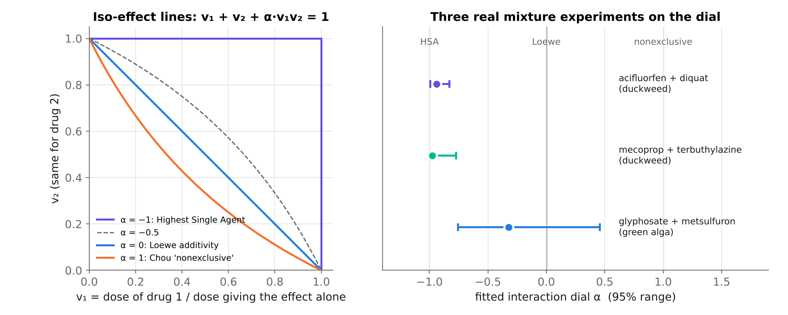
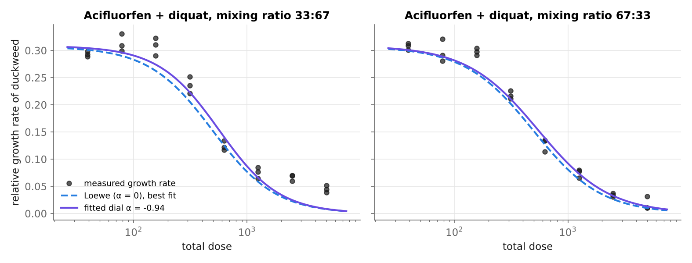

Biology series · 3 of 11
Chou and Talalay's combination index, v₁ + v₂ + α·v₁v₂, is exactly v₁ ∘α v₂. On that dial α = 0 is Loewe additivity and α = −1 is the Highest Single Agent model, whose rule that one drug makes the other irrelevant is the library's wall theorem. Bliss independence is plain ∘₁ on effect odds. I fitted α to three real mixture experiments on algae and duckweed: one sits at Loewe, two sit near the HSA end.

Known or new. Everything named here is known pharmacology and toxicology. Loewe additivity (1926), Bliss independence (1939), the Highest Single Agent model, and Chou and Talalay's combination index with its interaction term (1984) are standard; so is the multi-target model of cell kill. Other one-parameter families also run from Loewe to HSA, for instance Hewlett's model, which the data authors used for one of these sets. What this page adds is the placement: the combination index is the weighted circle operation, α = −1 is HSA, and HSA's defining property is the wall.
Is there a lead worth following? Not a strong one, so I noted it here rather than following it further. The placement is exact and gives one number that puts HSA, Loewe and Chou's 'nonexclusive' case on a single line, and real data land at sensible places on it. But drug-synergy scoring already has several one-parameter families that do the same job, so the dial is a tidy common language, not a new prediction. Bliss being plain ∘₁ on effect odds is exact and pleasing, but it is a rewriting of 'survivals multiply'.
Mix two drugs. For the effect the mixture reaches, write v₁ for the dose of drug 1 in the mix divided by the dose of drug 1 alone that gives that same effect, and v₂ likewise. Chou and Talalay's combination index is
and the mixture is called additive when CI = 1. The interaction number α is the dial. Three settings carry names:
The wall carries a meaning here. At v₂ = −1/α the index is −1/α whatever v₁ is. For α = −1 the wall is v₂ = 1: once drug 2 alone gives the effect, drug 1 is irrelevant. That sentence is the definition of HSA, and Lean proves it from the library's wall theorem.
One correction to a common shorthand: Chou's α = 1 is not Bliss independence, even when every curve has Hill slope 1. On random cases the two differ by up to 91% in effect odds.
Bliss independence says the surviving fractions multiply: 1 − EAB = (1 − EA)(1 − EB). In effects that is the "or" law, dial −1. In effect odds o = E/(1 − E), since 1 + o = 1/(1 − E), it is
exactly, for any shape of dose–response curve (checked to 2×10⁻¹⁴, proved in Lean). With Hill slope 1, Loewe additivity is odds simply adding, dial 0 on the same coordinate. So on effect odds, Loewe and Bliss are dial 0 and dial 1, the same pair as the two two-nutrient growth laws on the metabolism page.
The drc package ships three binary-mixture toxicity experiments by Cedergreen and colleagues, analysed by Sørensen et al. (2007): growth of a green alga under glyphosate and metsulfuron, and growth of duckweed under acifluorfen and diquat, and under mecoprop and terbuthylazine. Each uses fixed mixing ratios at a series of dilutions. I fitted log-logistic curves for the single compounds and one α for all the mixtures, by least squares, and got 95% ranges from the likelihood profile.
Bliss independence is rejected in all three. Adding a lower plateau to every curve moves each α by 0.012 at most (polished). For the alga the separate mixing ratios scatter widely (−1.0 to 0.4), so a single α there is a summary, not a law.

In the multi-target model a cell dies only if all n targets are hit, so it survives if any target survives: survival 1 − (1 − e−D/D₀)ⁿ is the dial −1 power of the per-target survival. That is exact and textbook.
The linear-quadratic radiation model is a near miss worth recording. Splitting a dose d₁ + d₂ into two fractions saves 2β·d₁d₂ of log-kill, a corner term, and incomplete repair scales it between 0 and 1. But no fixed dial k makes the split effect a weighted circle operation of the two single-fraction effects: the k needed runs from 0.55 to 0.17 across ordinary doses. It is a quadratic, not the circle operation.
| Place | What the circle operation does there | Known since | Verdict |
|---|---|---|---|
| Combination index | CI = v₁ ∘α v₂; α is the dial | Chou and Talalay 1984 | Exact, known |
| Highest Single Agent | α = −1; its 'other drug irrelevant' rule is the wall | Long-standing reference model | Exact placement |
| Bliss independence | Plain ∘₁ on effect odds, any curve shape | Bliss 1939 | Exact, known |
| Real mixtures | α = −0.32 (alga), −0.94 and −0.98 (duckweed) | Data: Cedergreen; Sørensen et al. 2007 | Measured dial values |
| Multi-target kill | Survival is wpow(−1) | Textbook radiobiology | Exact, known |
| LQ split dose | Corner term but no fixed dial | Textbook radiobiology | Negative result |
File biology/03-cell/lean/CellBiology.lean, core Lean 4.37 with no mathlib, built on the shared library's base and using ∘₁ for the circle operation. Every theorem uses only Lean's standard axioms. It goes into the shared proof library as FusedAlgebra/Topics/Biology/CellBiology.lean.
bliss_odds, bliss_or, ci_hsa, ci_hsa_field, ci_is_wAdd, ci_loewe, ci_nonexclusive, ci_shift, ci_wall, loewe_slope_one, multitarget, one_add_odds, star_def
Numeric checks: 17 of 17 pass, from checks.py beside this page.
Which compound the data sets' percentage column refers to is not stated in the documentation I read, so the figure labels give the mixing ratio only. α is symmetric in the two compounds, so the fitted values do not depend on that labelling. Polish (Nov 26): the 95% ranges had been read off a grid with steps of 0.05; solving for where the likelihood profile crosses the 5% line moved their ends to −0.76 to 0.46, −0.99 to −0.83 and −1.00 to −0.77 (before −0.75 to 0.45, −0.95 to −0.85, −1.00 to −0.80). Rerunning every fit to 1e-14 moved each α by less than 0.0001 and left the p-values unchanged at the quoted digits; the plateau check moves acifluorfen + diquat by 0.012 rather than 0.01. About 65 s in all. The verdicts are unchanged. The figure's range bars now show the polished ranges.